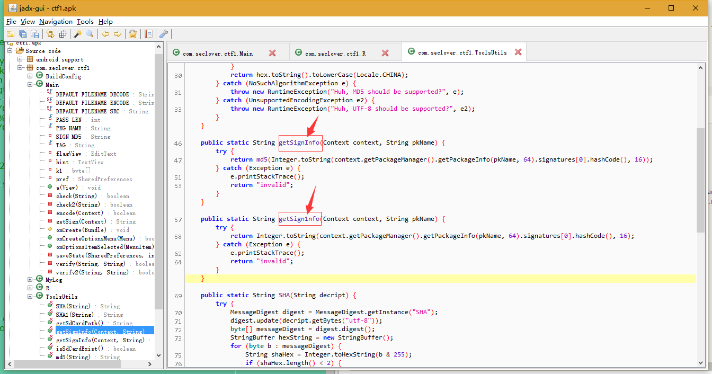
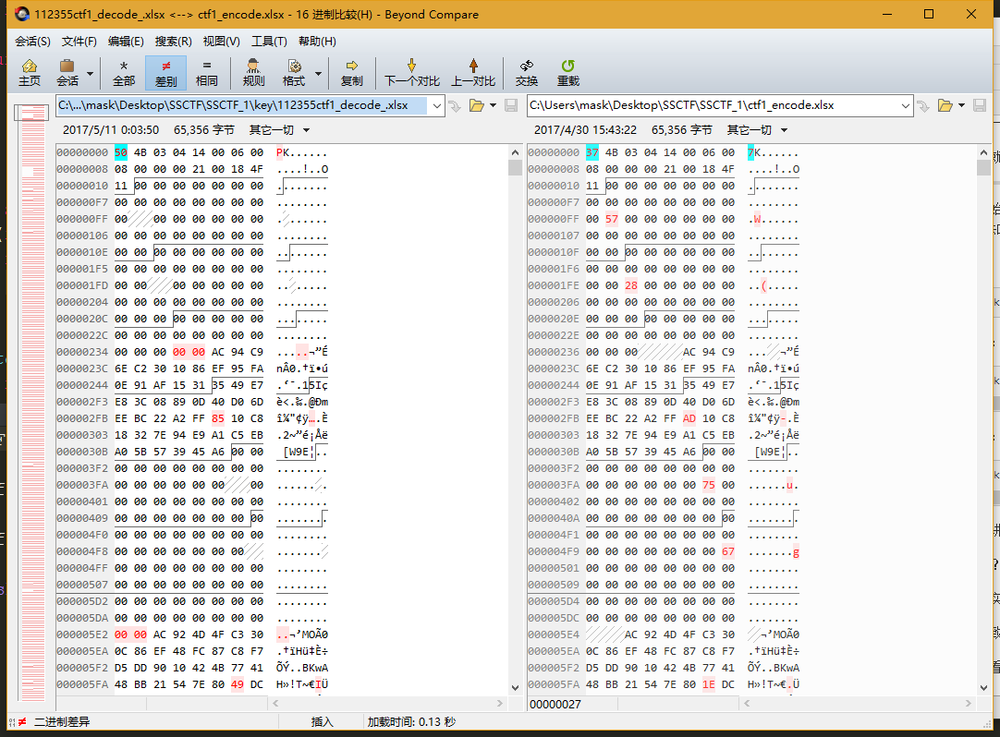
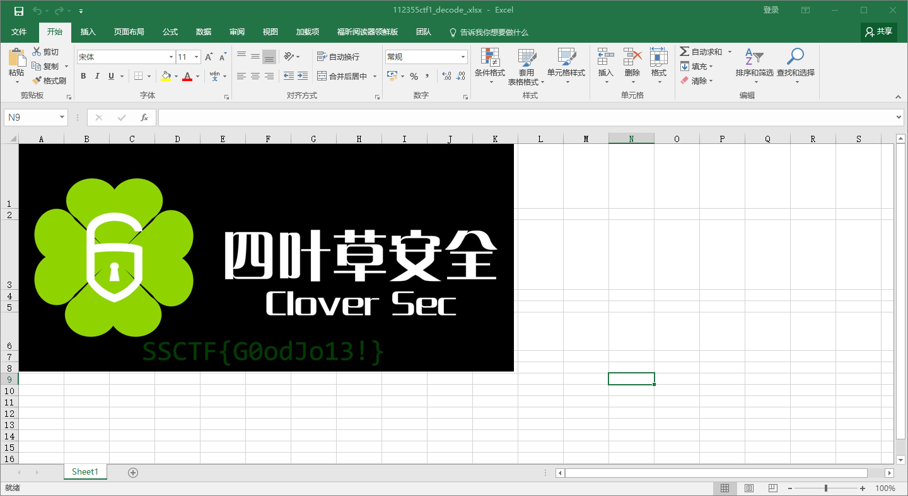
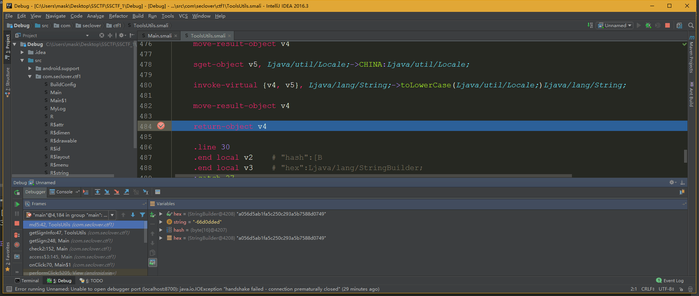

先看AndroidManifest，纯属习惯问题：
<?xml version="1.0" encoding="utf-8"?>
<manifest package="com.seclover.ctf1" platformBuildVersionCode="24" platformBuildVersionName="7.0" xmlns:android="http://schemas.android.com/apk/res/android">
<uses-sdk android:minSdkVersion="19" android:targetSdkVersion="22" />
<uses-permission android:name="android.permission.MOUNT_UNMOUNT_FILESYSTEMS" />
<uses-permission android:name="android.permission.WRITE_EXTERNAL_STORAGE" />
<application android:allowBackup="true" android:icon="@drawable/ic_launcher" android:label="@string/app_name" android:theme="@style/AppTheme">
<activity android:label="@string/app_name" android:name=".Main" android:screenOrientation="portrait">
<intent-filter>
<action android:name="android.intent.action.MAIN" />
<category android:name="android.intent.category.LAUNCHER" />
</intent-filter>
</activity>
</application>
</manifest>
这里有两条权限：
<uses-permission android:name="android.permission.MOUNT_UNMOUNT_FILESYSTEMS" /> //允许挂载和反挂载文件系统
<uses-permission android:name="android.permission.WRITE_EXTERNAL_STORAGE" /> //允许写入外部存储
跟进入口类：
这里一般都会先找onCreate()方法
这里有一些资源文件需要找到对应的，我这里就直接给出注释了
protected void onCreate(Bundle savedInstanceState) {
boolean isEncrypted = false;
System.out.println("BuildConfig.DEBUGfalse");
super.onCreate(savedInstanceState);
setContentView(R.layout.preference);
this.flagView = (EditText) findViewById(R.id.c);
this.hint = (TextView) findViewById(R.id.e);
final Button submit = (Button) findViewById(R.id.d);
this.pref = getSharedPreferences("ctf1", 0);//设置SharedPreferences文件 在/data/data/com.seclover.ctf1/shared_prefs/目录下
if (this.pref.getInt("isEncrypted", 0) != 0) {//如果isEncrypted的值不为0
isEncrypted = true;//设置true
}
if (isEncrypted) {
this.hint.setText(R.string.hint_encrypted);//文档已加密,请联系xxx解密.
submit.setText(R.string.btn_text_decrypt);//解密
} else {
this.hint.setText(R.string.hint_set_pwd);//请设置一个6位数密码,然后才能进入应用
submit.setText(R.string.btn_text_set_pwd);//设置密码
}
submit.setOnClickListener(new OnClickListener() {
public void onClick(View v) { //设置按钮点击事件
boolean isEncrypted;
Main.this.pref = Main.this.getSharedPreferences("ctf1", 0);
if (Main.this.pref.getInt("isEncrypted", 0) != 0) {
isEncrypted = true;
} else {
isEncrypted = false;
}
if (!isEncrypted) {
String key = Main.this.flagView.getText().toString();
if (key == null || key.isEmpty() || key.length() != 6) {//输入的key满足其中一个
Toast.makeText(Main.this, R.string.input_len_not_enough, 0).show();//输入不能为空或长度不正确！
return;
}
Main.this.check(Main.this.flagView.getText().toString());
Main.this.hint.setText(R.string.hint_encrypted);//文档已加密,请联系xxx解密.
submit.setText(R.string.btn_text_decrypt);//解密
Main.this.saveState(Main.this.pref, 1);
} else if (Main.this.check2(Main.this.flagView.getText().toString())) {
Toast.makeText(Main.this, R.string.try_face_swiping, 0).show();//刷脸试试!
} else {
Toast.makeText(Main.this, R.string.try_shout, 0).show();//大喊一声解锁试试!
}
}
});
}
那么接着跟进check方法：
private boolean check(String key) {
if (!verify(getSign(this), this.SIGN_MD5)) {
return false;
}
for (int i = 0; i < 100; i++) {
for (int j = 0; j < 100; j++) {
this.k1[((i + 17) * (j + 5)) % this.k1.length] = (byte) ((this.k1[(i * j) % this.k1.length] ^ (key.charAt((i * j) % key.length()) * 7)) % TransportMediator.KEYCODE_MEDIA_PAUSE);
}
}
encode(this);
return true;
}
跟进verify：
private boolean verify(String key1, String key2) {
int i;
this.k1 = ToolsUtils.SHA(key1).getBytes();
byte[] k2 = ToolsUtils.SHA(key2).getBytes();
for (i = 0; i < this.k1.length; i++) {
for (int j = 0; j < k2.length; j++) {
this.k1[(((i * j) * 7) + 9) % this.k1.length] = (byte) ((this.k1[i] ^ (j * 5)) % TransportMediator.KEYCODE_MEDIA_PAUSE);
k2[(((i * j) * 7) + 9) % k2.length] = (byte) ((k2[i] ^ (j * 5)) % TransportMediator.KEYCODE_MEDIA_PAUSE);
}
}
boolean isBreak = false;
int len = this.k1.length > k2.length ? k2.length : this.k1.length;
for (i = 0; i < len; i++) {
if (((this.k1[i] ^ k2[i]) ^ this.k1[i]) != this.k1[i]) {
isBreak = true;
break;
}
}
if (isBreak) {
return false;
}
return true;
}
和getSign：
private String getSign(Context context) {
return ToolsUtils.getSignInfo(context, "com.seclover.ctf1");//可以看到这里调用了ToolsUtils类，那么我们跟进查看
}
继续跟进，别看花眼了2333

public static String getSignInfo(Context context, String pkName) {
try {
return md5(Integer.toString(context.getPackageManager().getPackageInfo(pkName, 64).signatures[0].hashCode(), 16));
} catch (Exception e) {
e.printStackTrace();
return "invalid";
}
}
看看这个MD5方法：
public static String md5(String string) {
try {
byte[] hash = MessageDigest.getInstance("MD5").digest(string.getBytes("utf-8"));
StringBuilder hex = new StringBuilder(hash.length * 2);
for (byte b : hash) {
if ((b & 255) < 16) {
hex.append("0");
}
hex.append(Integer.toHexString(b & 255));
}
return hex.toString().toLowerCase(Locale.CHINA);//
} catch (NoSuchAlgorithmException e) {
throw new RuntimeException("Huh, MD5 should be supported?", e);
} catch (UnsupportedEncodingException e2) {
throw new RuntimeException("Huh, UTF-8 should be supported?", e2);
}
}
然后接着跟进encode：
private boolean encode(Context context) {
File fileR = new File(Environment.getExternalStorageDirectory(), DEFAULT_FILENAME_SRC);//ctf1.xlsx
if (!fileR.exists()) {
return false;
}
try {
FileOutputStream fos = new FileOutputStream(new File(Environment.getExternalStorageDirectory(), DEFAULT_FILENAME_ENCODE));//ctf1_encode.xlsx
FileInputStream fis = new FileInputStream(fileR);
byte[] b = new byte[fis.available()];
fis.read(b);
for (int i = 0; i < b.length; i += 256) {
b[i] = (byte) (b[i] ^ this.k1[i % this.k1.length]);
}
fos.write(b);
fos.close();
fis.close();
fileR.delete();
} catch (Exception e) {
e.printStackTrace();
}
return true;
}
那么流程大致清楚了，这里简单说下
将输入的的密码作为参数传入check方法，然后check方法里面调用了一次verify，作用就是判断应用的包名信息通过MD5加密后，是否等于SIGN_MD5。
并且在verify中同时对k1数组进行了初始化，开始瞄了半天没找到在哪赋值的
然后在check这里将k1进行一个处理，得到一个新的k1
for (int i = 0; i < 100; i++) {
for (int j = 0; j < 100; j++) {
this.k1[((i + 17) * (j + 5)) % this.k1.length] = (byte) ((this.k1[(i * j) % this.k1.length] ^ (key.charAt((i * j) % key.length()) * 7)) % TransportMediator.KEYCODE_MEDIA_PAUSE);
}
}
然后调用了encode方法，作用就是将这个新的k1和ctf1_encode.xlsx文件进行异或，没0x100个字节异或一下。
呐，这就是大致的流程
那么开始解密操作，既然是异或加密了，那么我们在异或一次就能解密，讲道理是这样的，但是我们并不知道这个新的k1是多少，这里回忆一下这个新的k1怎么来的
第一步
this.k1 = ToolsUtils.SHA(key1).getBytes();
第二步：
this.k1[(((i * j) * 7) + 9) % this.k1.length] = (byte) ((this.k1[i] ^ (j * 5)) % 127);
第三步：
this.k1[((i + 17) * (j + 5)) % this.k1.length] = (byte) ((this.k1[(i * j) % this.k1.length] ^ (key.charAt((i * j) % key.length()) * 7)) % 127);
那么，讲道理是通过key1然后各种变换来的
逆回去？，不存在的好吧。这里我当时也思考了半天。。。。没办法，做题经验太少，略略略
然后其实看了一下大佬写的writeup，然后自己再顺着思路解的23333
呐，大致思路就是爆破，爆破啥？通过爆破那个输入的6位数的值
这里先看看一下那个加密的xlsx文件的格式和正常xlsx文件（这里随便新建一个就行我偷了下懒，拿解密好了的对比。。。懒得再去新建了23333）的区别

不同处红色标明出来了
0x00，0x100,0x200,0x300,0x400,0x500处，我们看前几个就够了， 那么爆破的思路就是
通过爆破那个6位密码 -> 得到k1 -> 各种变换得到那个新的k1 -> 然后再和加密的xlsx异或一次 ->得到解密后的原文件
这里给出解题代码，大部分都是题目里给的。。。分析下即可得出，主要是那个爆破以及xlsx的几处标志位，那才是关键
import java.io.File;
import java.io.FileInputStream;
import java.io.FileOutputStream;
public class test {
static byte[] k1;
static String MD5_KEY = "a056d5ab1fa5c250c293a5b7588d0749";
public static void main(String[] args) throws Exception {
for(int i = 100000; i < 999999; i++) {
verify(String.valueOf(i),MD5_KEY);
if(check(String.valueOf(i), i)) {
System.out.println("Find it : ctf1_decode_" + i + ".xlsx");
}
}
}
private static boolean verify(String key,String key2) {
k1 = ToolsUtils.SHA(key).getBytes();
byte[] k2 = ToolsUtils.SHA(key2).getBytes();
for(int i = 0; i < k1.length; i++) {
for(int j = 0; j < k1.length; j++) {
k1[(i * j * 7 + 9) % k1.length] = ((byte)((k1[i] ^ j * 5) % 127));
k2[(((i * j) * 7) + 9) % k2.length] = (byte) ((k2[i] ^ (j * 5)) % 127);
}
}
boolean isBreak = false;
int len = k1.length > k2.length ? k2.length : k1.length;
for (int i = 0; i < len; i++) {
if (((k1[i] ^ k2[i]) ^ k1[i]) != k1[i]) {
isBreak = true;
break;
}
}
if (isBreak) {
return false;
}
return true;
}
private static boolean check(String key, int index) {
for(int i = 0; i < 100; i++) {
for(int j = 0; j < 100; j++) {
k1[(i + 17) * (j + 5) % k1.length] = ((byte)((k1[i * j % k1.length] ^ key.charAt(i * j % key.length()) * 7) % 127));
}
}
if(test.decode(k1, index)) {
return true;
}
return false;
}
private static boolean decode(byte[] key, int index) {
try {
File file = new File("D:\\ctf1_encode.xlsx");
if (!file.exists()) {
System.out.println("file does not exist");
return false;
}
FileInputStream fileInputStream = new FileInputStream(file);
byte[] temp = new byte[fileInputStream.available()];
fileInputStream.read(temp);
for(int i = 0; i < temp.length; i += 256) {
temp[i] = ((byte)(temp[i] ^ key[i % key.length]));//再异或一次，即可解密
}
if ((temp[0x00] != 'P')//判断是否为一个符合格式的xls文件
|| (temp[0x100] != 0x00)
|| (temp[0x200] != 0x00)
|| (temp[0x400] != 0x00)
|| (temp[0x500] != 0x00)) {
fileInputStream.close();
return false;
}
File output = new File(index+"ctf1_decode_.xlsx" );
FileOutputStream fileOutputStream = new FileOutputStream(output);
fileOutputStream.write(temp);
fileOutputStream.close();
fileInputStream.close();
System.out.println("key:"+index);//输入的key
}
catch(Exception e) {
e.printStackTrace();
}
return true;
}
}
然后输出，key就是爆破出来的6位密码
"C:\Program Files\Java\jdk1.8.0_102\bin\java" -Didea.launcher.port=7532 "-Didea.launcher.bin.path=I:\IntelliJ IDEA Community Edition 2016.3\bin" -Dfile.encoding=UTF-8 -classpath "C:\Program Files\Java\jdk1.8.0_102\jre\lib\charsets.jar;C:\Program Files\Java\jdk1.8.0_102\jre\lib\deploy.jar;C:\Program Files\Java\jdk1.8.0_102\jre\lib\ext\access-bridge-64.jar;C:\Program Files\Java\jdk1.8.0_102\jre\lib\ext\cldrdata.jar;C:\Program Files\Java\jdk1.8.0_102\jre\lib\ext\dnsns.jar;C:\Program Files\Java\jdk1.8.0_102\jre\lib\ext\jaccess.jar;C:\Program Files\Java\jdk1.8.0_102\jre\lib\ext\jfxrt.jar;C:\Program Files\Java\jdk1.8.0_102\jre\lib\ext\localedata.jar;C:\Program Files\Java\jdk1.8.0_102\jre\lib\ext\nashorn.jar;C:\Program Files\Java\jdk1.8.0_102\jre\lib\ext\sunec.jar;C:\Program Files\Java\jdk1.8.0_102\jre\lib\ext\sunjce_provider.jar;C:\Program Files\Java\jdk1.8.0_102\jre\lib\ext\sunmscapi.jar;C:\Program Files\Java\jdk1.8.0_102\jre\lib\ext\sunpkcs11.jar;C:\Program Files\Java\jdk1.8.0_102\jre\lib\ext\zipfs.jar;C:\Program Files\Java\jdk1.8.0_102\jre\lib\javaws.jar;C:\Program Files\Java\jdk1.8.0_102\jre\lib\jce.jar;C:\Program Files\Java\jdk1.8.0_102\jre\lib\jfr.jar;C:\Program Files\Java\jdk1.8.0_102\jre\lib\jfxswt.jar;C:\Program Files\Java\jdk1.8.0_102\jre\lib\jsse.jar;C:\Program Files\Java\jdk1.8.0_102\jre\lib\management-agent.jar;C:\Program Files\Java\jdk1.8.0_102\jre\lib\plugin.jar;C:\Program Files\Java\jdk1.8.0_102\jre\lib\resources.jar;C:\Program Files\Java\jdk1.8.0_102\jre\lib\rt.jar;C:\Users\mask\Desktop\SSCTF\SSCTF_1\key\out\production\key;I:\IntelliJ IDEA Community Edition 2016.3\lib\idea_rt.jar" com.intellij.rt.execution.application.AppMain test
key:112355
Find it : ctf1_decode_112355.xlsx
key:179351
Find it : ctf1_decode_179351.xlsx
答案应该不止两个的，这里等了一下不想等了，就停止运行了，反正答案出来了

总结一下，学到了一些解题套路，然后还有就是不要被题目牵着走。这题有一点就是那个算包名的MD5的值然后比较，分析一下啊，肯定要，必须要，一定要相等的啊，不然你怎么搞嘞，不要傻乎乎的真的去算一下包名的MD5值，你算了的话，会发现就和前面给的private String SIGN_MD5 = "a056d5ab1fa5c250c293a5b7588d0749";一毛一样，看到还有说啥用jeb动态调试一下得出来的。（其实我倒拿IDEA调试了下smali，验证一下，确实一样）
 浪费时间。。。。。。